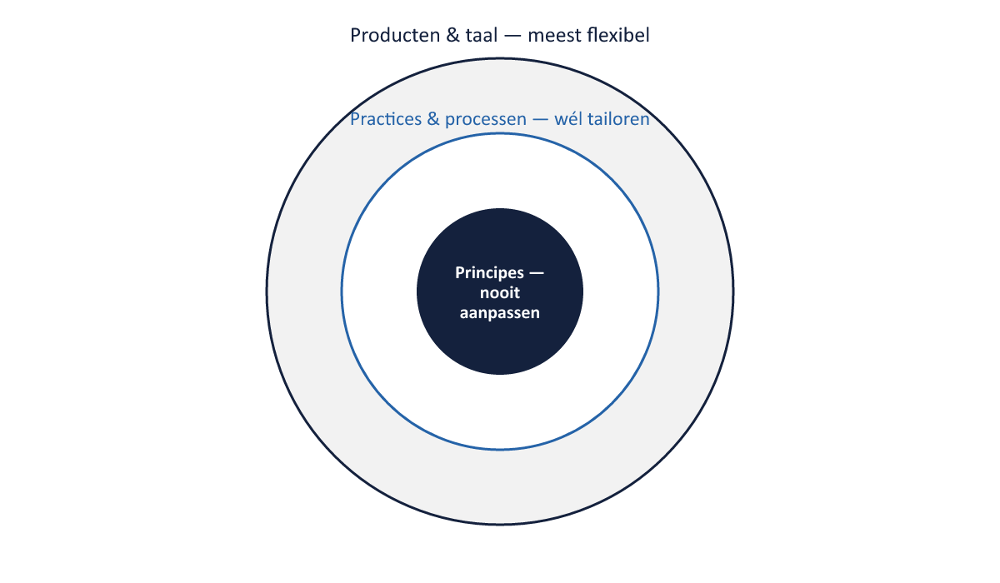

Sheet 1Titel
Project- en Programmamanagement
Niveau 1 · Deel 2: De zeven principes van PRINCE2 7
Sheet 2Terugblik
Zeven bevindingen uit de WGP 2.0 post-mortem
Vandaag: het antwoord op elke bevinding
Sheet 3Drie lagen, drie mate van flexibiliteit
- Principes → nooit aanpassen
- Practices en processen → wél tailoren
- Producten en terminologie → meest flexibel

Sheet 4Principe 1
Ensure continued business justification
Borg voortdurende bedrijfsrechtvaardiging — bij elke faseovergang herijkt
→ sluit bevinding 1: business case nooit herzien
Sheet 5Principe 2
Learn from experience
Lessen zoeken, vastleggen, doorgeven — geen documentatieplicht maar gedrag
→ sluit bevinding 6: risicoregister nooit als levend document gebruikt
Sheet 6Principe 3
Define roles, responsibilities, and relationships
Business, gebruiker, leverancier — plus de onderlinge relatie, niet alleen het organogram
→ sluit bevinding 2: stuurgroep zonder bevoegdheid
Sheet 7Principe 4
Manage by stages
Beheerste fasen, elk met een go/no-go-besluit
→ sluit bevinding 3: 18 maanden zonder beslismoment
Sheet 8Principe 5
Manage by exception
Toleranties per laag; alleen uitzonderingen escaleren
→ sluit bevinding 5: geen toleranties, dus geen ruimte om te sturen
Sheet 9Principe 6
Focus on products
Eerst het resultaat en de kwaliteitscriteria, dan de activiteiten
→ sluit bevinding 4: activiteitenplanning i.p.v. resultatenplanning
Sheet 10Principe 7
Tailor to suit the project
Aanpassen aan omvang, complexiteit, risico en context — bewust en gedocumenteerd
→ sluit bevinding 7: nooit besloten hoe baten na oplevering gemeten zouden worden
Sheet 11People: het nieuwe element
- Stakeholderrelaties, leiderschap, cultuur, samenwerking
- PRINCE2 6: rollen + processen + documenten = het werkt vanzelf
- PRINCE2 7: mensen moeten ook daadwerkelijk effectief samenwerken

Sheet 12Sustainability: het zevende performance target
- PRINCE2 6: tijd, kosten, scope, kwaliteit, risico, baten
- PRINCE2 7: + duurzaamheid
- ESG steeds vaker een formeel toetsingscriterium, ook bij Meridiaan
Sheet 13De gulden regel van tailoring
- Principes: nooit aanpassen
- Practices/processen: aanpassen, functie behouden
- Taal/producten: vrij aanpasbaar
- Elke keuze beargumenteerd en vastgelegd (in het PID)
Sheet 14Tailoring of schending? Vuistregel
Verandert de vórm, maar blijft het besturingsvermogen intact → tailoring
Verdwijnt het besturingsvermogen zelf → principeschending
| Wat gebeurt er? | Uitkomst |
|---|---|
| Vorm verandert, besturingsvermogen blijft intact | Tailoring |
| Besturingsvermogen verdwijnt (geen beslismoment, geen tolerantiegrens meer) | Principeschending |
Sheet 15Vooruitblik
Deel 3–6: de zeven practices — het “hoe” bij het “waarom” van vandaag
Deel 3: Business Case en Organizing
Sheet 16Afsluiting
Reflectievraag: ken je een voorbeeld waarin een principe werd “getailord” dat dat niet had mogen worden?